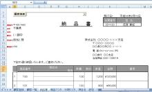

第20回.納品書を作成、顧客情報を取得(3)
エクセルで顧客管理を作成します、
とうとう、20回まできました、
では、前回の続き、3部作の最終です。
再度、エクセルのサンプル です。
実際のエクセルを見ながら確認して下さい。
まず、シート「納品書」です。

今回は、シート上部の、ボタンの機能説明になります。
コントロールの追加方法の詳細は、「第13回.コントロールのボタンを配置 」を参照して下さい。
その前に、シート「顧客一覧」にコンボボックスを追加します。
コンボボックスの追加方法は前回やったばかりですが、
１．2003なら「コントロールツールボックス」、2007以降なら「ActiveXコントロール」
の「コンボボックス」を適当な位置に追加して下さい。
２．プロパティを変更する
「オブジェクト名」を「cmbシート名」
このコンボボックスには、コードを入れません。
選択を変更しても何もすることがないからです。
ボタン
１．2003なら「コントロールツールボックス」、2007以降なら「ActiveXコントロール」
の「コマンドボタン」を適当な位置に追加して下さい。
２．プロパティを変更する
「オブジェクト名」を「btn顧客検索」
追加された「ボタン」をダブルクリック、または、「コードの表示」
このモジュールを以下のようにします。
Private Sub btn顧客検索_Click()
Call 顧客一覧へ(ActiveSheet.Name)
End
Sub
続いて、シート「顧客登録」のシートモジュール「一覧へ_Click」以下の部分を修正します。
Private Sub 一覧へ_Click()
Dim rtn As Integer 'メッセージの応答の受取
rtn =
MsgBox("入力中のデータは破棄されます" & vbLf & vbLf & _
"よろしいですか？", vbYesNo,
"確認")
If rtn = vbNo Then '「いいえ」の場合は終了
Exit Sub
End
If
Call 顧客一覧へ(ActiveSheet.Name)
End
Sub
さらに、「Mod共通」の「顧客一覧へ」を以下に変更
Sub 顧客一覧へ(ByVal strSht As String)
Dim i As
Integer
シート取得("顧客一覧").Select
With
ActiveSheet
For i = 0 To .cmbシート名.ListCount - 1
If
.cmbシート名.List(i) = strSht Then
.cmbシート名.ListIndex = i
Exit
For
End If
Next
End With
End
Sub
まだまだ、シート「顧客一覧」のシートモジュールへ以下を追加。
Private Sub Worksheet_Activate()
Dim ary As Variant
ary =
シート取得("設定").Range("シート名")
cmbシート名.Clear
cmbシート名.List() = ary
End
Sub
なんのなんの
Sub ファンクションF1()
Dim strWork As String
Select Case True
Case ActiveSheet Is
シート取得("顧客一覧")
Select Case
ActiveSheet.cmbシート名.Text
Case シート取得("顧客登録").Name,
""
If Not IsEmpty(Cells(ActiveCell.Row,
開始セル取得("顧客一覧").Column)) And _
ActiveCell.Row >
開始セル取得("顧客一覧").Row Then
マクロ開始処理
strWork =
Cells(ActiveCell.Row, 開始セル取得("顧客一覧").Column)
Call
顧客登録シート作成(True)
開始セル取得("顧客登録").Offset(0, 1) =
strWork
Call
顧客一覧より取得(True)
マクロ終了処理
End
If
Case シート取得("納品書").Name
If Not
IsEmpty(Cells(ActiveCell.Row, 開始セル取得("顧客一覧").Column)) And
_
ActiveCell.Row > 開始セル取得("顧客一覧").Row
Then
シート取得("納品書").Range("納品書_顧客番号") = Cells(ActiveCell.Row,
開始セル取得("顧客一覧").Column)
シート取得("納品書").Select
End
If
Case Else
End Select
Case
ActiveSheet Is シート取得("顧客登録")
Debug.Print Timer
Call
顧客一覧へ登録
Debug.Print Timer
End Select
End
Sub
準備OKでしょうか
あっちこっちで追加・修正になりました。
何をしているかと言うと、以下の流れになります
「納品書」のボタンをクリック
↓
「顧客一覧」のシートを表示
↓
顧客を選択し、F1
↓
「納品書」の顧客番号が設定される
↓
顧客情報が表示される
この一連の機能を実現する為に、いろいろ追加しています。
このような場合、よくあるのは、ユーザーフォームを使用します。
まあ、それでも良いのですが、ユーザーフォームを新たに作り、プログラムを入れるのは、
それなりの作業になります。
せっかく顧客一覧のシートがあるのですから、
これをそのまま使用した方が効率的なのはいうまでもありません。
ただし、それなりの仕掛けは必要です。
Private Sub btn顧客検索_Click()
自身のシート名を引数に入れての、Subプロシーシ゜ャーのCallです。
Private Sub 一覧へ_Click()
Sub 顧客一覧へ(ByVal strSht As String)
そして、
With ActiveSheet
For i = 0 To .cmbシート名.ListCount - 1
If
.cmbシート名.List(i) = strSht Then
.cmbシート名.ListIndex = i
Exit
For
End If
Next
End
With
cmbシート名のリストを先頭より検索し、引数のシート名と一致するリストを選択状態にします。
.List(i)でコンボボツクスのリストのi番目（0開始）のテキストを取得します。
.ListIndex = iで、i番目のリストを選択状態にします。
Exit Forは、既に用はすんだので、ループを抜けます。
Exit Forを記述しなくても、正常に動作しますが、
プログラムの基本は、余分な事はさせない。
Private Sub Worksheet_Activate()
「顧客一覧」のシートが選択された時に起動されるイベントです。
シート「設定」の、シート名の範囲を、配列に入れ、
cmbシート名をクリアした後、この配列を入れています。
あれっ、名前定義「シート」名」の設定はどこかで記述しましたかね？
まあ、もうお分かりですよね、可変リストを作成するときの、名前定義と同様です。
もっとも、シートなんて、そんなに追加するものでもないので、固定でも支障ありませんが。
注意）．確か前回、コンボボックスに入れる時に、0番目が空だと先頭が空行になると説明しました。
しかし、ここで作成される、配列は、Lboundが1であり、0番目が存在していないのです。
ですから、問題が無いのです。
セル範囲(Range)を、Variantに入れた場合は、1からの配列になります。
Sub ファンクションF1()
覚えていますでしょうか、ブックモジュールの「Workbook_Open」で定義しています。
つまり、どのシートで、F1が押されても、このモジュールが起動されます。
そこで、
Select Case True
Case ActiveSheet Is シート取得("顧客一覧")
この部分で、押されたシートを判定し、個別のCase文で処理しています。
さらに、
今回は、シート名のコンボボックスの選択状態により、処理を分岐させるようにしました。
Select Case
ActiveSheet.cmbシート名.Text
Case シート取得("顧客登録").Name,
""
この部分ですね。
｢顧客登録」の場合は、いままで通りです。
Case シート取得("納品書").Name
新たに、「納品書」の場合の処理を追加しました。
「納品書」の「顧客番号」に、現在行の顧客番号を設定し、
シート「納品書」へ移動しています。
注意）．IF文で、顧客番号の存在行かをチェックしています。
このIF文は、シート名判定のSelect文の上にすることもできます。
ただし、もし今後、顧客番号の無い行でF1を押した場合の処理を記述する時に、
変更が大きくなってしまいます。
今回は、そのような処理を入れる事は無いと思うので、上にした方が良いように思えます。
ただ、このような事を考慮してプログラミングしていくことが、「保守性」を高めるのです。
注意）．シート取得("納品書")が２行続いているので、Withを書きたくなります。
しかし、既にSelectが２段階、そしてIF文となっています。
ネストは、概ね３段階程度にしないと、「可読性」を落とします。
また、コンパイラーも完璧ではないので、動作不良を起こす原因にもなります。
従って、この場合２行程度ならWithを使いません。
さらに複雑になる場合は、IF文以下を、別のSubモジュールにしていきます。
これで、
「納品書」のボタンをクリック
↓
「顧客一覧」のシートを表示
↓
顧客を選択し、F1
↓
「納品書」の顧客番号が設定される
↓
顧客情報が表示される
の機能が実装されました。
この機能は、さらに今後作成するシートでも使う事になるはずです。
このような、そのソフトにとっての基本機能は、しっかりとさせておく必要があります。
さてさて、大急ぎで3部作を出しました。
別に急ぐ必要がないのですが、プログラム作っちゃったし・・・
まあ、次回以降で、補足説明をします。
この3部作を読んで理解できるなら、もうバリバリのプログラマーですからね。
次回から、少し復習をしましょう。
ではまた。
同じテーマ「エクセル顧客管理」の記事
第17回.商品マスタを作成、２段階の可変リスト
第18回.納品書を作成、顧客情報を取得(1)
第19回.納品書を作成、顧客情報を取得(2)
第20回.納品書を作成、顧客情報を取得(3)
第21回.イベント処理について
第22回.コントールについて
第23回.納品書を作成、商品情報を取得(1)
第24回.納品書を作成、商品情報を取得(2)
第25回.納品書を作成、商品情報を取得(3)
第26回.WorksheetFunctionについて
第27回.RangeとCellsの深遠
新着記事NEW ・・・新着記事一覧を見る
VBA100本ノック 100本目：WEBから100本ノックのリストを取得｜VBA練習問題（3月3日）
VBA100本ノック 99本目：自動席替え（行列と前後左右が全て違うように）｜VBA練習問題（3月2日）
VBA100本ノック 98本目：席替えルールが守られているか確認｜VBA練習問題（3月1日）
VBA100本ノック 97本目：Accessデータを取得（グループ集計）｜VBA練習問題（2月27日）
VBA100本ノック 96本目：Accessデータを取得（マスタ結合&抽出）｜VBA練習問題（2月26日）
VBA100本ノック 95本目：図形のテキストを検索するフォーム作成｜VBA練習問題（2月24日）
VBA100本ノック 94本目：表範囲からHTMLのtableタグを作成｜VBA練習問題（2月23日）
VBA100本ノック 93本目：複数ブックを連結して再分割｜VBA練習問題（2月22日）
VBA100本ノック 92本目：セルの色を16進で返す関数｜VBA練習問題（2月20日）
VBA100本ノック 91本目：時間計算（残業時間の月間合計）｜VBA練習問題（2月19日）
アクセスランキング ・・・ ランキング一覧を見る
1.最終行の取得（End,Rows.Count）｜VBA入門
2.RangeとCellsの使い方｜VBA入門
3.変数宣言のDimとデータ型｜VBA入門
4.マクロって何？VBAって何？｜VBA入門
5.Range以外の指定方法（Cells,Rows,Columns）｜VBA入門
6.セルのコピー&値の貼り付け（PasteSpecial）｜VBA入門
7.繰り返し処理（For Next)｜VBA入門
8.セルに文字を入れるとは（Range,Value）｜VBA入門
9.マクロはどこに書くの（VBEの起動）｜VBA入門
10.とにかく書いてみよう（Sub,End Sub）｜VBA入門
このサイトがお役に立ちましたら「シェア」「Bookmark」をお願いいたします。
記述には細心の注意をしたつもりですが、
間違いやご指摘がありましたら、「お問い合わせ」からお知らせいただけると幸いです。
掲載のVBAコードは動作を保証するものではなく、あくまでVBA学習のサンプルとして掲載しています。
掲載のVBAコードは自己責任でご使用ください。万一データ破損等の損害が発生しても責任は負いません。